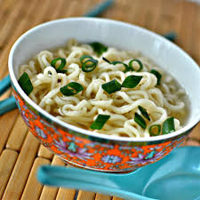

The Best Top Ramen Recipe

Description
Everyone knowns about Top Ramen. We're going to make it better
Ingredients
- Top Ramen - Beef or Chicken Recommend
- Powder seasoning (Garlic, onion,cayenne pepper, etc)
- Pepper sauce - Trini Scorpion sauce recommended
- Hot dog
- Eggs
- Soy Sauce
- Sesame Oil
- Chives
Steps
- Add Top Ramen flavouring along with Powder Seasonings, Pepper Sauce, Soy Sauce and Sesame oil to taste
- Boil Ramen in 3 cups of water
- Add Slices of Hot Dog Sausage after two (2) minutes of boiling
- Add beaten eggs with approximately one (1) minute of boil time left
- Add Ramen with eggs and sausage to bowl of flavouring and oil; stir until ingredients are evenly distributed
- Garnish with thinly sliced chives